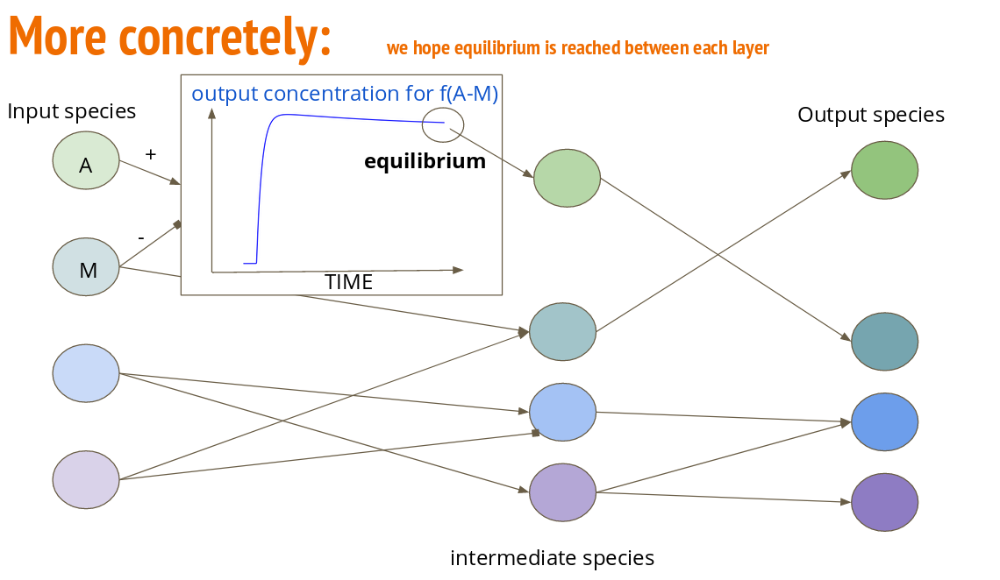
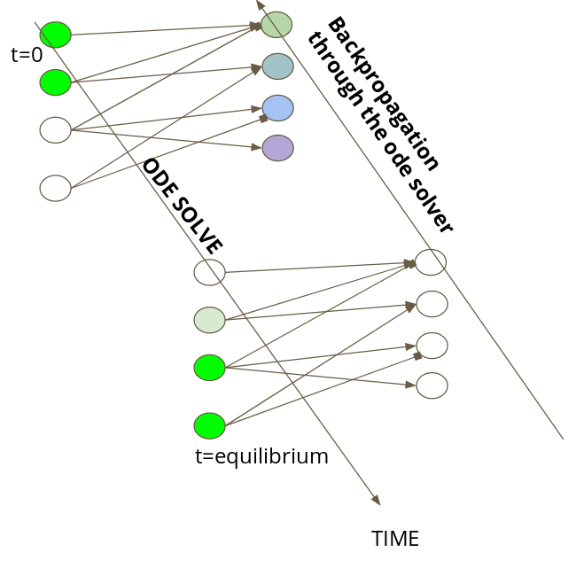

Welcome to BioChemicalNN’s documentation!¶
The project is mainly based on the simulOfBioNN package, on which an introduction can be found in getting started. As for now the project only supports mass-action solve on the CPU, but will be quickly interfaced with a solve on the GPU. The paretoPlot package provide an easy way to obtain very fast pareto plot of the performance of a given architecture.
Contents:
This project aims to propose a coarse-grained approach for the discovering of interesting bio-chemical network. Multiple species reacting in a suited environment can be seen as a network of chemical reaction. Given some input species, the equilibrium of the chemical reaction, if it exists, give birth to new species. If the network is well organized we can understand this final value as the evaluation of a neural network.
To find such interesting network, we train neural network under special constraints, and test them by simulating mass-action kinetics. Our project is separated in two parts: the training part and the simulating one. For now ODE are simulating on the GPU using scipy odeint. Network training is made with tensorflow. We aim at doing everything on to the GPU so that simulation and training can be coupled in a ODE-net fashion approach, enable us to leave the equilibrium constraints. Such improvement will allow us to use the full dynamic.